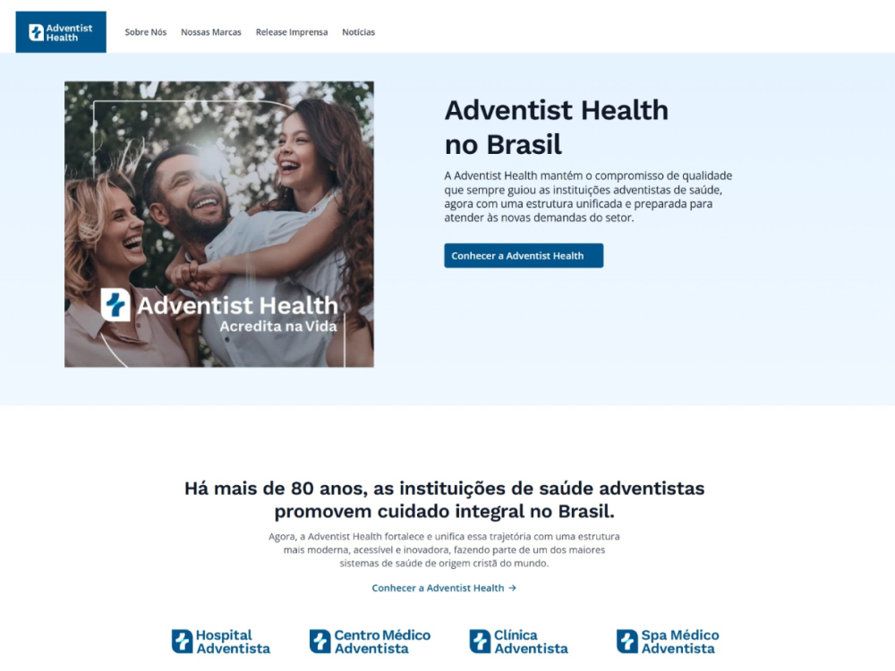
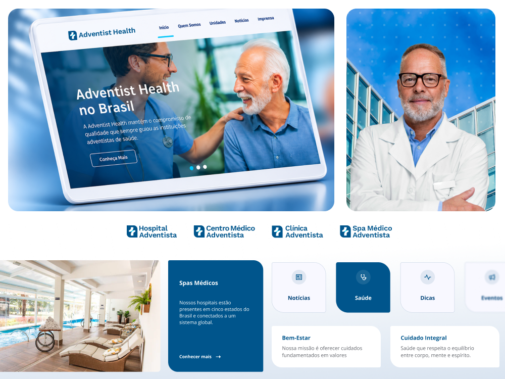
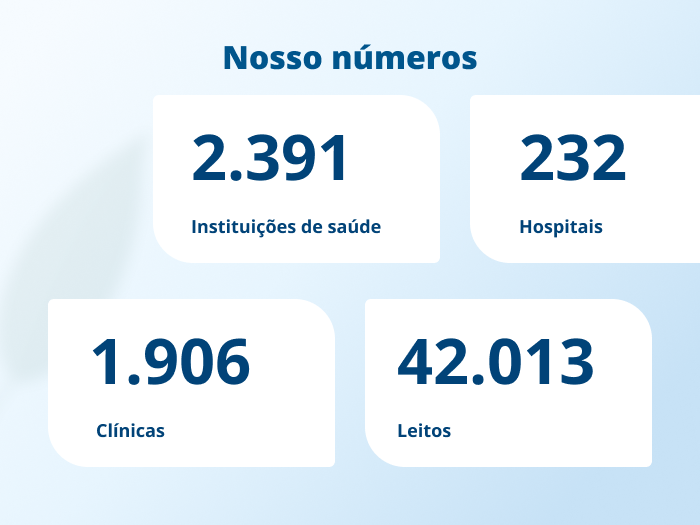
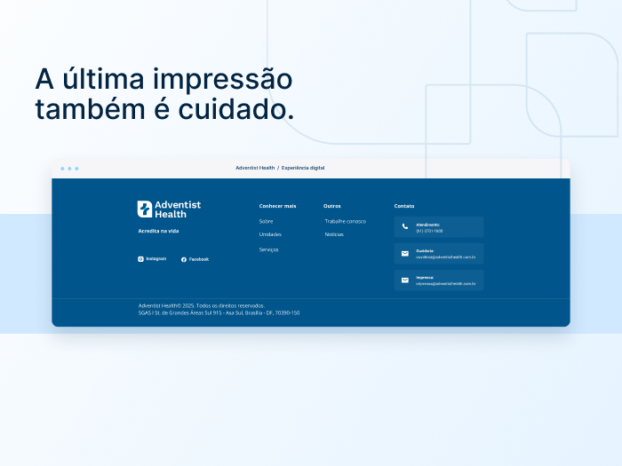

Adventist Health
O projeto consistiu no redesign do site institucional da Adventist Health no Brasil. A partir da identidade visual existente da marca, desenvolvi uma nova proposta de interface, repensando a organização dos conteúdos, a hierarquia visual e a apresentação dos serviços e informações institucionais.

Uma comunicação que precisava de mais clareza.
O site anterior reunia informações sobre a Adventist Health, mas a forma como os conteúdos eram apresentados não comunicava com clareza a dimensão da instituição, seus serviços e sua atuação no Brasil.
O desafio do redesign foi repensar a estrutura e a apresentação dessas informações, construindo uma interface mais clara, organizada e coerente com a identidade da marca.


Uma identidade reconhecível em cada detalhe.
A identidade visual da Adventist Health já estava definida. Meu trabalho foi aplicá-la à nova interface, organizando cores, tipografia e elementos visuais de maneira consistente.
Paleta de cores
- Azul institucional #00558C
- Fundo claro #F8F8FF
- Branco #FFFFFF
Open Sans
Tipografia da interface · Regular, Semibold e Bold
Cuidado em cada detalhe.
Saúde e bem-estar
Uma interface que apresenta os serviços e as informações institucionais com clareza.
Componentes que organizam a experiência.
Cards, imagens, indicadores e elementos institucionais foram organizados para apresentar conteúdos diferentes com uma linguagem visual consistente. As composições a seguir reúnem elementos reais das telas do projeto.



Uma nova forma de apresentar a Adventist Health.
O redesign reuniu informações institucionais, serviços e diferenciais em uma interface mais organizada e visualmente consistente.
A proposta buscou comunicar com mais clareza a atuação da Adventist Health, respeitando sua identidade visual e valorizando o cuidado presente em sua missão.